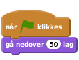
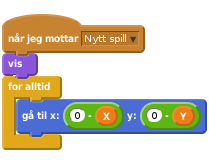
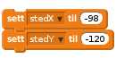
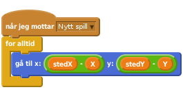
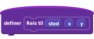
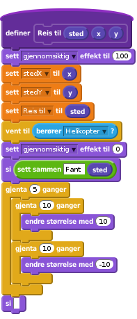
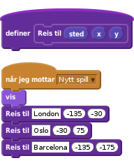

Scratch
Hvor i All Verden? Del 2
Hvor i All Verden? er et reise- og geografispill hvor man raskest mulig skal fly innom reisemål spredt rundt i Europa. Dette er den andre leksjonen av tre. Her skal vi spesielt se på hvordan vi kan gjøre kartet større enn skjermen, ved å la kartet rulle i bakgrunnen. Underveis vil vi se litt nærmere på hva et koordinatsystem er.
I den siste leksjonen vil lage lister som gjør det enklere å legge til mange reisemål. Vi vil også lage en skikkelig intro til spillet.

Vi vil nå fortsette med det programmet vi laget i del 1.
Sjekk spesielt at
du har et helikopter som du kan styre rundt på skjermen med piltastene,
du har en stedfigur som kan bli funnet av helikopteret.
Vi vil nå at bakgrunnen skal bli flyttbar. Vanlige bakgrunner i Scratch kan ikke flyttes. Vi må derfor "jukse litt", og la bakgrunnen være en figur.
Slett Europakart-bakgrunnen din. En helt hvit bakgrunn vil passe bra nå.
Lag en ny figur ved å klikke  ved siden av
ved siden av Ny figur. Velg filen europakart.png som du lastet ned forrige gang. Hvis du ikke har denne lett tilgjengelig kan du laste den ned på nytt fra http://kodeklubben.github.io/nb-NO/scratch_kurs.2/02/europakart.png.
Gi denne nye kartfiguren navnet Kart.
For å være sikre på at denne figuren ligger bakerst som en bakgrunn kan vi starte med følgende kode:

Vi vil nå lage denne figuren så stor som mulig. Dessverre har Scratch en begrensning på hvor store figurer kan være. Du kan se denne om du først krysser av for at størrelse skal vises på kart-figuren. Deretter kan du endre tallet i
Du vil se at størrelsen ikke blir satt til 9999, men til et mindre tall. Legg på en kloss som setter så stor størrelse som mulig på kartet når det grønne flagget klikkes.
Til bruk senere, når vi skal lage en intro til spillet, er det greit å skjule kartfiguren når det grønne flagget klikkes.
I del 1 så vi såvidt hvordan vi bruker koordinater for å beskrive hvor helikopteret og reisemålet er på skjermen (og på kartet). Om du trykker i på en figur vil du alltid se koordinatene til figuren, som to tall x og y.

Midt på skjermen har koordinatene x: 0 og y: 0. Ellers beskriver x hvor et punkt er sideveis. Dersom x er mindre enn null er punktet til venstre for midten, mens om x er positivt er punktet til høyre for midten. På samme måte sier y hvor høyt på skjermen et punkt er. y større enn null betyr at punktet er over midten, mens et punkt med negativ y vil være nedenfor midten av skjermen.

Vanligvis passer Scratch på disse koordinatene for oss, slik at vi ikke trenger å tenke så mye på dem.
Men nå skal vi gjøre noe litt spesielt. Vi vil skape en illusjon hvor det ser ut som om helikopteret flytter på seg, mens det egentlig er bakgrunnen som flytter seg. For å gjøre dette må vi lage våre egne X- og Y-variabler som vi bruker til å koble helikopteret, stedet og bakgrunnen.
Vi vil først endre hva som skjer når vi trykker på piltastene.
Lag to nye variabler som gjelder for alle figurer. Disse skal hete X og Y, og vil beskrive hvor helikopteret er i forhold til kartet.
Vi skal nå endre hva som skjer når du trykker på piltastene. I stedet for at helikopteret skal
vil vi endre X eller Y med hastighet eller med
Oppdater alle fire hvis-løkkene på helikopteret.
Klikk på det grønne flagget.
Helikopteret skal nå ikke flytte seg når du trykker på piltastene. Hvis helikopteret flytter seg må du slette gå-klossene.
Helikopteret skal fortsatt snu seg til høyre eller venstre når du trykker på piltastene.
Vi kan nå flytte kartet når helikopteret flyr rundt omkring.
Dette steget er egentlig ganske lett. Det eneste vi må passe er at vi skal flytte kartet motsatt vei av hva helikopteret skal fly. For eksempel, om vi vil at det skal se ut som om helikopteret flytter seg oppover må vi flytte kartet nedover.
Legg til denne koden på kartet:

Klikk på det grønne flagget.
Ser det ut som om helikopteret flytter på seg når du trykker på piltastene?
Se nøye etter. Ser du at helikopteret faktisk står på samme sted hele tiden?
Hva skjer om du flyr ut av kartet?
Hvordan kan du begrense hvor helikopteret flyr? Kan du legge på kode slik at helikopteret ikke kan fly ut av kartet?
Vi må nå la reisemålet også flytte seg med kartet.
Det er litt vanskelig å teste når vi har gjort reisemålet usynlig. Endre derfor på gjennomsiktigheten til sted-figuren. For eksempel kan du sette
For at det skal se ut som om stedet ligger i ro på kartet må faktisk sted-figuren flytte seg sammen med kartet. Vi behøver da to variabler som holder rede på hvor stedet skal ligge i forhold til kartet. Lag to variabler som heter stedX og stedY. Begge disse skal gjelde kun for denne figuren.
Bytt ut
med kode som setter variablene i stedet:

Vi kan nå lage en helt ny blokk som flytter stedet rundt på skjermen.

Prøv spillet. Flytter den røde prikken seg rundt på kartet?
Du ser kanskje at den røde prikken ikke lenger ligger ved Barcelona? Det er fordi vi har laget et større kart. Da stemmer ikke lengre de gamle koordinatene.
Endre verdiene for X og Y til det ser ut som om den reisemålet ligger omtrent på riktig sted igjen.
Vi skal nå se på hvordan vi relativt enkelt kan legge til flere reisemål i spillet vårt.
Om du bare ser på koden vi har lagt på sted-figuren kan det se ut som om det er mye arbeid å legge til et nytt reisemål. Men om vi ser litt nøyere oppdager vi at om vi vil ha et nytt sted å reise til kan vi bruke mye av den samme koden. Vi må bare endre navnet (Reis til) og koordinatene (X og Y).
Dette er et bra eksempel på når det kan lønne seg å bruke funksjoner, eller lage egne klosser som man gjør i Scratch.
Klikk på Flere klosser og lag en kloss som ser slik ut:

hvor sted er tekst, mens x og y er tallverdier:
Etter at du klikker OK dukker det opp en ny kloss på skjermen:

Under denne klossen kan vi definere hva funksjonen vår skal gjøre.
Flytt skriptet ditt fra Nytt sted-blokken til den nye funksjonen, og endre litt - spesielt i variablene - slik at funksjonen din ser slik ut:

Til slutt kan vi endre på Nytt spill-blokken slik at vi bruker den nye funksjonen. For eksempel

Om du prøver spillet nå vil du kanskje oppdage et lite problem. Dersom du ikke flytter deg etter å ha funnet det første reisemålet, vil det neste reisemålet bli funnet automatisk. Det er fordi vi ikke rekker å flytte sirkelen før vi tester om den berører helikopteret.
Den enkleste måten å løse dette på er å legge på klossen
rett før vi venter på helikopteret berøres inne i funksjonen vår.
Klikk på det grønne flagget.
Flyr helikopteret rundt på kartet på en naturlig måte?
Fungerer reisemålene slik de skal? Ligger de omtrent der de skal ligge?
Kan du reise til flere reisemål på rad?
Spillet vårt har blitt ganske mye kulere nå! Neste gang skal vi gjøre spillet ferdig ved å lage lister som gjør det enklere å lage en tilfeldig reiserute. Vi skal også se hvordan vi kan lage en intro til spillet, samt legge på en tidsbegrensning og poengsum.
Spillet blir morsommere hvis ikke reisemålene kommer i samme rekkefølge hver gang du spiller. Hvordan kan du få reisemålene til å komme i tilfeldig rekkefølge? Prøv å lage kode som gjør dette!
Fortsatt er ikke kartet så veldig stort. En måte å komme seg rundt begrensningen på figurstørrelse i Scratch er å la bakgrunnen bestå av flere deler. Filen http://kodeklubben.github.io/nb-NO/scratch_kurs.2/02/europakart.zip inneholder 9 kartfliser du kan prøve å pusle sammen. Du må da laste inn hver av dem som en egen figur. Hver av dem trenger omtrent samme kode som kartet vi har brukt så langt. Du må bare endre litt i gå til-klossene.
{kind=link}